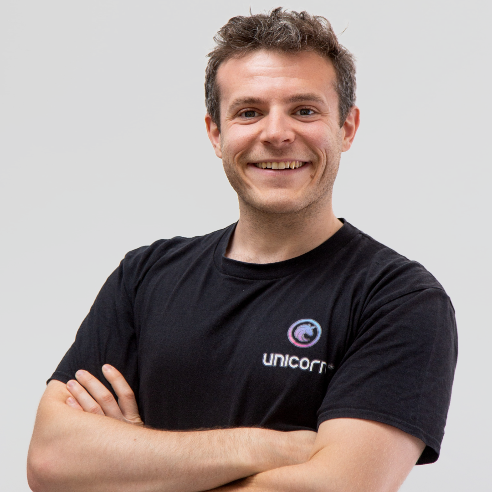
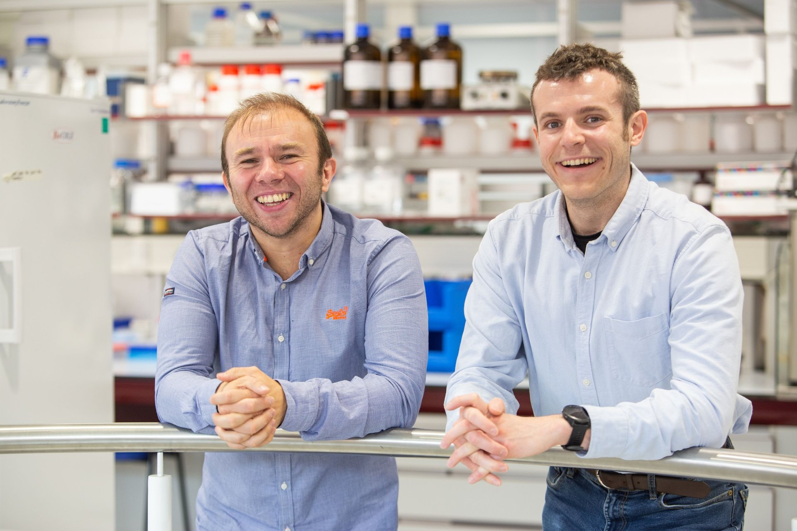
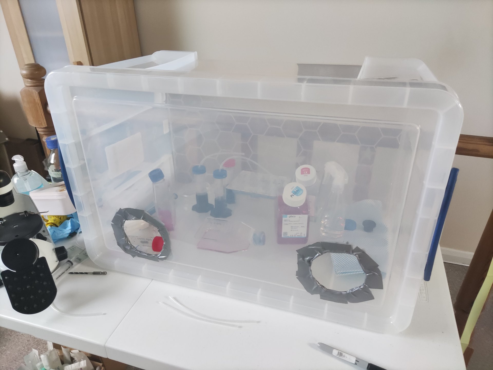
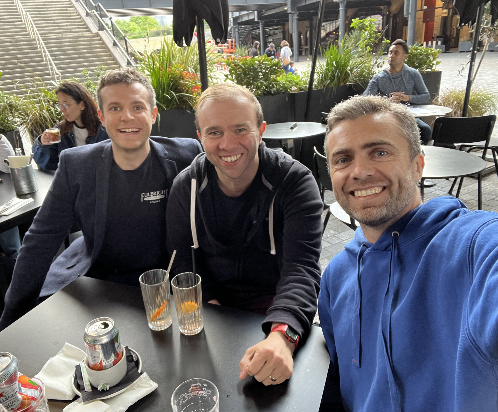
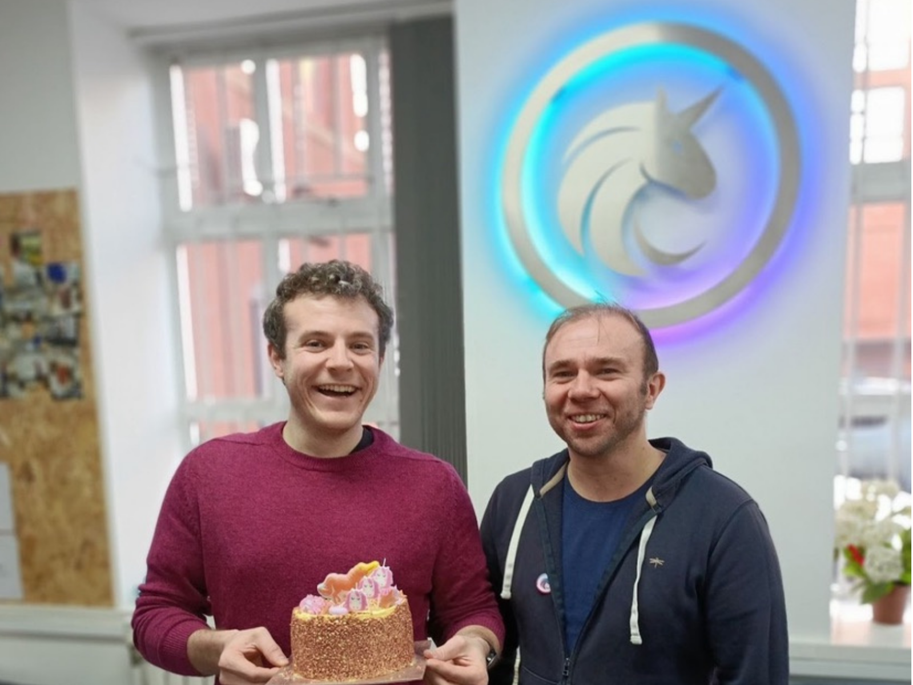
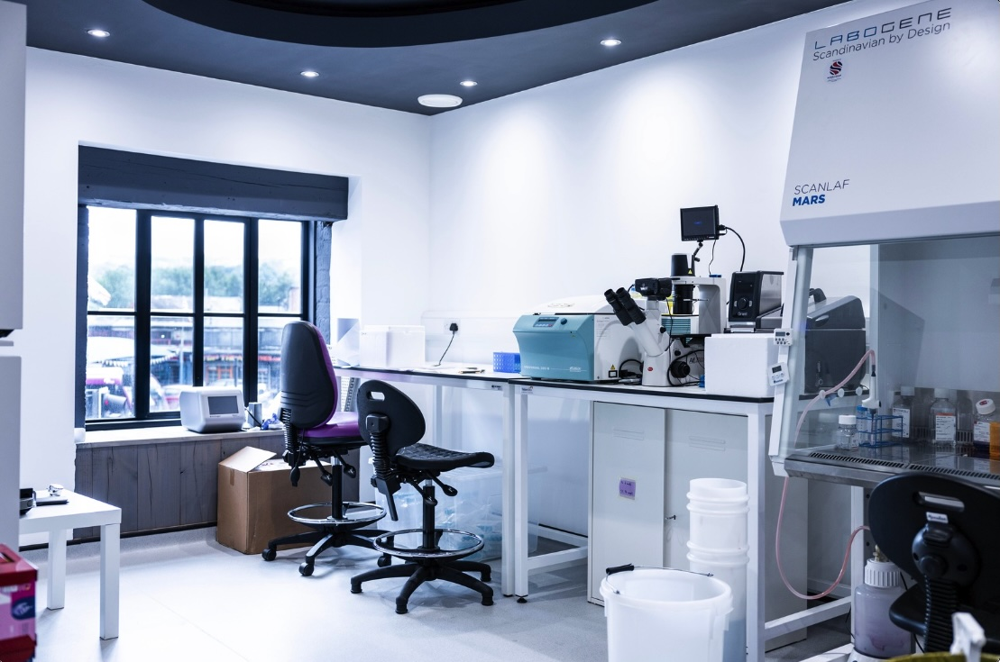
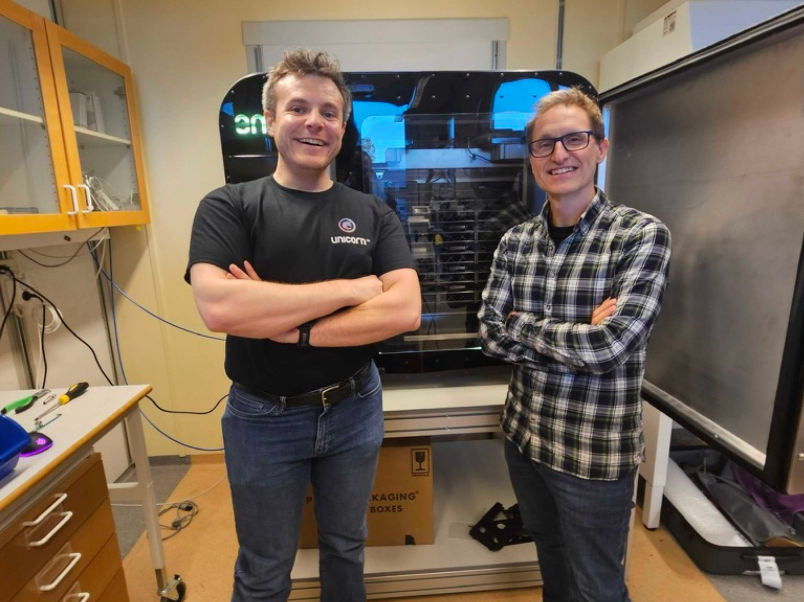
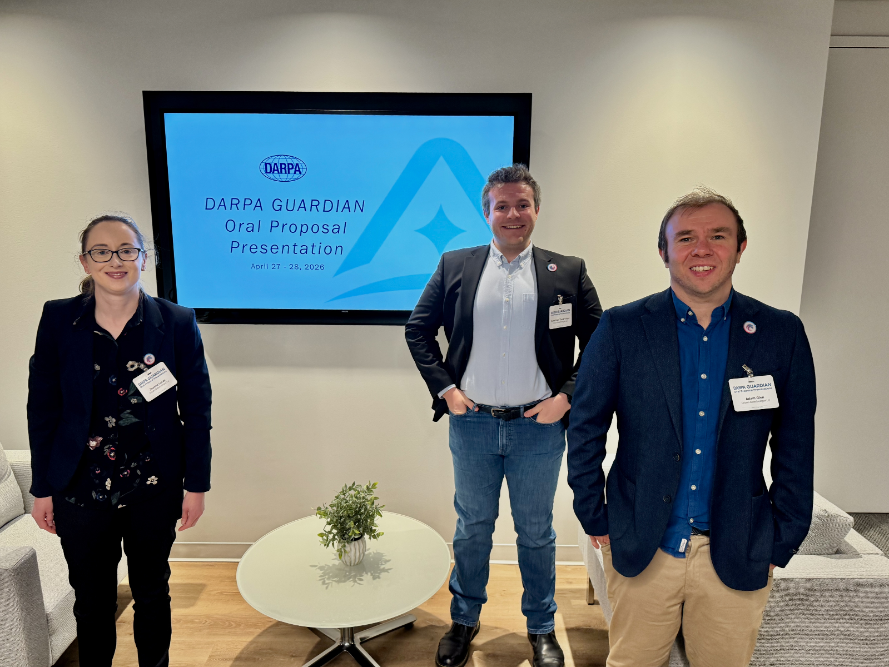

Why Adam & Jack
Why Adam & Jack
Six years building autonomous biology infrastructure.
Dr. Adam Glen
🇬🇧
Founder & CEO
20 years building autonomous biology. From PhD to Unicorn.

Jack Reid
🇺🇸
Founder & President
Fulbright Scholar. Dropped out of Cambridge-PhD to build Unicorn.

2020
Met on Entrepreneur First. Mid-pandemic. Over Zoom.

2021
First prototypes built in Adam's attic.

2022
Raised first funding round (~$4M raised to date).

2023
First reagent shipped and R&D contract won.

2024
Converted a nightclub into an R&D and mfct. center.

2025
First robotic, software and AI tooling shipped.

2026
First US deployment, DoW DARPA contract won.